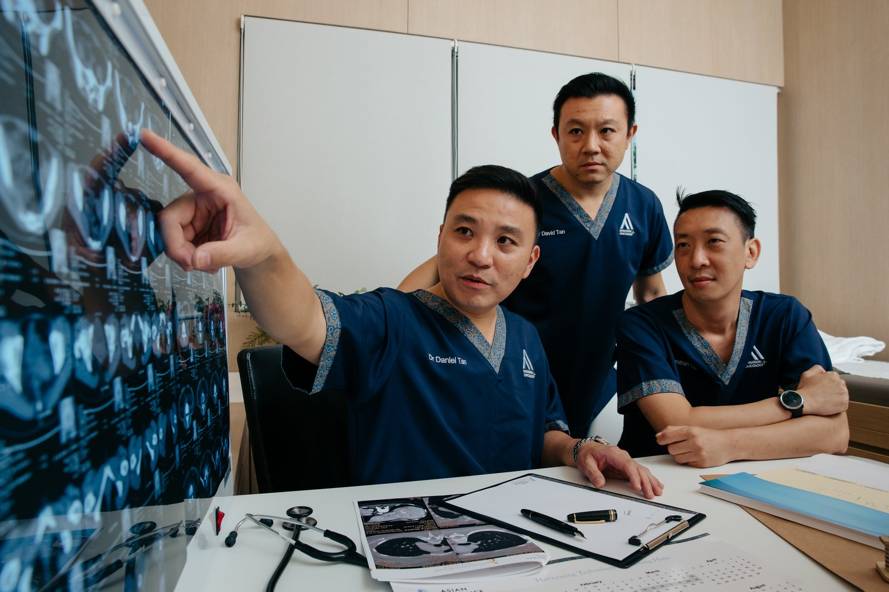

Brain or spine tumours
Newly diagnosed primary tumours, or cancers that have spread (metastasised) to the brain or spine — and you want to understand whether radiosurgery or SBRT is right for you.

Stereotactic Radiosurgery (SRS) and Stereotactic Body Radiotherapy (SBRT) for brain, spine and prostate cancers, and for oligometastatic disease. Co-founder of AARO. Active in international radiation oncology and stereotactic radiosurgery bodies.
These are the situations Dr Tan most commonly sees — but every case is different. If you're unsure whether radiation oncology fits your situation, our care team can help you decide.
Newly diagnosed primary tumours, or cancers that have spread (metastasised) to the brain or spine — and you want to understand whether radiosurgery or SBRT is right for you.
Considering SBRT for early-stage disease, or seeking precision-radiation options where surgery carries elevated risk.
Already under another oncologist's care and want to confirm whether radiation is the right next step — or hear an experienced view on your treatment plan.
You've been told that surgery carries high risk, or you'd prefer to avoid it. Modern radiation can match surgical outcomes for many cancers — without the recovery time.
Your medical team is considering whether to add radiation to your treatment, and they want a radiation oncologist's input on planning, sequencing and dose.
Pain from bone metastases, neurological symptoms from brain or spine lesions, or palliative needs that radiation can address quickly and gently.
Dr Tan trained and practised at the National Cancer Centre Singapore, progressing from Resident to Consultant. His work there contributed to the growth of stereotactic body radiation therapy (SBRT) for cancers including prostate, liver and spine.
He went on to co-found AARO with the goal of bringing sub-specialty radiation oncology into private practice in Singapore. He continues to engage with international radiation oncology meetings such as ASTRO, ASCO and ISRS.


Dr Tan's consultations are unhurried and considered. He takes the time to understand each person's situation: what matters to them, what they're afraid of, and what they need to hear in plain terms.
You won't be rushed through your appointment. You won't be talked at in jargon. And you won't leave with more questions than you came in with — because Dr Tan and the AARO care team work together, so the same person who explained your treatment plan is also the one who walks you through it.
For complex cases, Dr Tan convenes a multidisciplinary review with your surgeon and medical oncologist before recommending a path forward. The decision is collaborative — but it is always yours.
Senior Consultant Radiation Oncologist and co-founder of AARO. Dr Tan plays a leading role in the practice's clinical standards.
Many years of clinical experience focused on brain and spine tumours (benign and malignant) and prostate cancer. Core expertise: stereotactic radiosurgery (SRS) and stereotactic body radiotherapy (SBRT).
Trained in the full spectrum of modern radiation techniques: 3D-CRT, IMRT, VMAT, SRS, SBRT, brachytherapy and image-guided radiation therapy (IGRT).
NUS medical graduate. Trained and practised at the National Cancer Centre Singapore — Resident → Registrar → Consultant — before co-founding AARO.
Has undertaken advanced overseas training in clinical oncology and brachytherapy.
Co-founded AARO to bring sub-specialty, internationally-trained radiation oncology into Singapore's private sector — anchored in a purpose-built facility.
Has worked internationally with cancer centres across the region to support the development of stereotactic radiation programmes.
Publishes and presents at international meetings including ASTRO, ASCO and ISRS, with a focus on neuro-oncology and SBRT.
Dr Tan's full publication list — including peer-reviewed papers, conference presentations at ASTRO, ASCO and ISRS, and invited lectures — is available on request. Get in touch if you'd like a current list for academic, referral or due-diligence purposes.
WhatsApp our patient care team — we'll get back to you as soon as we can. No referral needed.